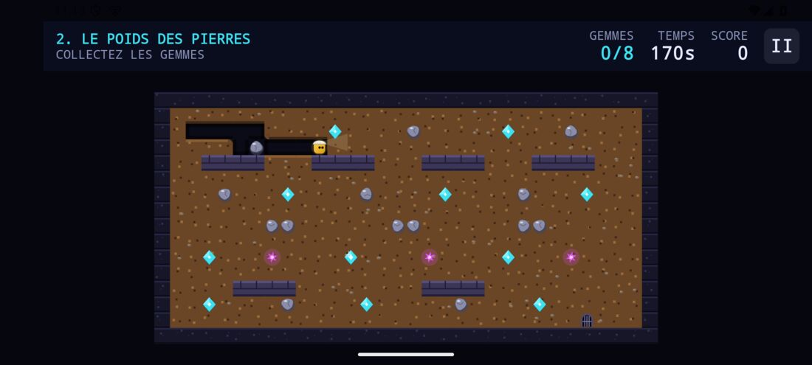

Gemstone Caverns
An underground digging game in the tradition of Boulder Dash. Dig through the soil, collect the gems, keep out from under the falling boulders, and reach the exit before the clock runs out — one hundred caves deep.
Un jeu de creusement souterrain dans la lignée de Boulder Dash. On creuse la terre, on ramasse les gemmes, on évite les rochers qui tombent, et on rejoint la sortie avant la fin du temps imparti — sur cent cavernes.
ហ្គេមជីកក្រោមដី តាមបែប Boulder Dash។ ជីកកាត់ដី ប្រមូលត្បូង ចៀសឱ្យឆ្ងាយពីក្រោមថ្មដែលកំពុងធ្លាក់ ហើយទៅដល់ច្រកចេញ មុនពេលអស់ម៉ោង — ចុះជ្រៅរហូតដល់រូងភ្នំទី 100។

Four things to understand.
Dig and collect
Dig through the soil to open a way, and pick up the cave’s quota of gems. The exit only opens once you have it.
Boulders fall
As soon as the soil gives way beneath them. They slide off rounded surfaces and crush whatever they meet — you included. They can be pushed sideways, provided the space behind is free.
Unstable crystals
They burst when a boulder strikes them or an explosion reaches them, and scatter gems. One explosion can set off the next.
Guardians
Four families, four behaviours. Crushed under a boulder, patrollers and trackers burst into gems — so the boulder is also a weapon.
Know who is after you.
| Guardian | Behaviour |
|---|---|
| Wanderer | Drifts about, with no particular plan. |
| Hunter | Charges in a straight line — a U-shaped wall is enough to hold it. |
| Patroller | Follows the walls, round and round its island. |
| Tracker | Computes a real path to reach you. It does not dig, but it will take the tunnel you dug. |
One idea per cave.
The first fifteen caves are each built around a single idea: you do not progress by replaying the previous one, only bigger. A few of them:
| Cave | Difficulty | What it asks of you |
|---|---|---|
| First steps | Easy | Dig, collect, reach the exit. |
| The weight of stones | Normal | Push a boulder, and do not linger underneath. |
| The great vault | Hard | A fall wakes a crystal; the chain reaction breaks the vault open. |
| The hourglass | Hard | Pierce a pile from below, and watch it settle. |
| The lock | Expert | Taking the gem opens the corridor; pushing the boulder closes it again. |
| The gem rain | Hard | A falling gem crushes too: empty each shaft from the bottom, without hurrying. |
| The maze | Expert | A tracker that always knows the way, but walks half as fast. |
| The bait | Expert | Open its path under a crystal, and drop the boulder in time. |
The eighty-five that follow, from 16 to 100, work these mechanics into nine families — boulder fields, scree, shafts, crystals, guardians, rounds, traps, wanderers and mazes — from Normal to Expert. They rotate from one family to the next, so two neighbouring caves never look alike. They are variations: the engine gains no new rule for them. The last twenty-five are the hardest of the lot, chosen as the ones that cost the automated planner the most effort to solve.
A stick that finds your thumb.
Put a finger anywhere on the screen and push in a direction: the virtual stick settles under your thumb instead of sitting in a fixed corner. A physical keyboard works too — arrows or WASD, space to pause.
Quatre choses à comprendre.
Creuser et ramasser
On creuse la terre pour se frayer un passage, et on ramasse le quota de gemmes de la caverne. La sortie ne s’ouvre qu’à ce moment-là.
Les rochers tombent
Dès que la terre cède sous eux. Ils glissent sur les surfaces rondes et écrasent ce qu’ils rencontrent — joueur compris. Ils se poussent horizontalement, à condition que la place derrière soit libre.
Les cristaux instables
Ils éclatent quand un rocher les percute ou qu’une explosion les atteint, et sèment des gemmes. Une explosion peut en déclencher une autre.
Les gardiens
Quatre familles, quatre comportements. Écrasés par un rocher, patrouilleurs et traqueurs éclatent en gemmes — le rocher est donc aussi une arme.
Savoir qui vous poursuit.
| Gardien | Comportement |
|---|---|
| L’errant | Dérive, sans plan particulier. |
| Le chasseur | Fonce en ligne droite — un mur en U suffit à le retenir. |
| Le patrouilleur | Longe les murs et fait le tour de son île. |
| Le traqueur | Calcule un vrai chemin pour vous rejoindre. Il ne creuse pas, mais il emprunte le tunnel que vous creusez. |
Une idée par caverne.
Les quinze premières cavernes sont bâties chacune autour d’une idée : on ne progresse pas en refaisant la précédente en plus grand. Quelques-unes :
| Caverne | Difficulté | Ce qu’elle demande |
|---|---|---|
| Premiers pas | Facile | Creuser, ramasser, rejoindre la sortie. |
| Le poids des pierres | Normal | Pousser un rocher, et ne pas s’attarder dessous. |
| Le grand coffre | Difficile | Une chute réveille un cristal, la chaîne perce le coffre. |
| Le sablier | Difficile | Percer un tas par-dessous, et le regarder se tasser. |
| Le verrou | Expert | La gemme prise ouvre le couloir, le rocher poussé le referme. |
| La pluie de gemmes | Difficile | Une gemme qui tombe écrase aussi : vider chaque puits par le bas, sans se presser. |
| Le labyrinthe | Expert | Un traqueur qui connaît toujours le chemin, mais marche deux fois moins vite. |
| L’appât | Expert | Lui ouvrir le chemin sous un cristal, et lâcher le rocher à temps. |
Les quatre-vingt-cinq suivantes, de la 16 à la 100, déclinent ces mécanismes en neuf familles — rochers, éboulis, puits, cristaux, gardiens, rondes, nasses, errants et labyrinthes — du Normal à l’Expert. Elles tournent d’une famille à l’autre, si bien que deux cavernes voisines ne se ressemblent jamais. Ce sont des variations : le moteur ne gagne aucune règle pour elles. Les vingt-cinq dernières sont les plus dures du lot, retenues comme celles qui ont coûté le plus d’effort au planificateur automatique.
Un manche qui trouve votre pouce.
Posez un doigt n’importe où sur l’écran et poussez dans une direction : le manche virtuel se cale sous votre pouce plutôt que dans un coin fixe. Un clavier physique fonctionne aussi — flèches ou ZQSD/WASD, espace pour la pause.
ចំណុច 4 ដែលត្រូវយល់។
ជីក និងប្រមូល
ជីកកាត់ដីដើម្បីបើកផ្លូវ ហើយប្រមូលត្បូងឱ្យគ្រប់ចំនួនដែលរូងភ្នំតម្រូវ។ ច្រកចេញនឹងបើក តែនៅពេលអ្នកប្រមូលបានគ្រប់ចំនួនប៉ុណ្ណោះ។
ថ្មធ្លាក់
ភ្លាមៗនៅពេលដីនៅពីក្រោមវាបាត់ទៅ។ វារអិលចុះពីលើផ្ទៃមូល ហើយកិនកំទេចអ្វីៗដែលវាជួប — រួមទាំងអ្នកផងដែរ។ អ្នកអាចរុញវាទៅចំហៀងបាន ប្រសិនបើកន្លែងនៅខាងក្រោយវានៅទំនេរ។
គ្រីស្តាល់មិនស្ថិតស្ថេរ
វាផ្ទុះនៅពេលថ្មបុកវា ឬនៅពេលការផ្ទុះមួយទៅដល់វា ហើយបាចត្បូងរាយប៉ាយ។ ការផ្ទុះមួយអាចបង្កឱ្យមានការផ្ទុះបន្ទាប់ទៀត។
អ្នកយាម
មាន 4 ក្រុម និងឥរិយាបថ 4 ប្រភេទ។ នៅពេលត្រូវថ្មសង្កត់កំទេច Patroller និង Tracker ផ្ទុះក្លាយជាត្បូង — ដូច្នេះថ្មក៏ជាអាវុធមួយផងដែរ។
ដឹងថាអ្នកណាកំពុងដេញតាមអ្នក។
| អ្នកយាម | ឥរិយាបថ |
|---|---|
| Wanderer | ដើរវង្វេងចុះឡើង ដោយគ្មានផែនការច្បាស់លាស់។ |
| Hunter | បោលទៅមុខត្រង់ៗ — ជញ្ជាំងរាងអក្សរ U មួយ គ្រប់គ្រាន់ដើម្បីឃាត់វា។ |
| Patroller | ដើរតាមជញ្ជាំង វិលជុំវិញកោះរបស់វាម្តងហើយម្តងទៀត។ |
| Tracker | គណនាផ្លូវពិតប្រាកដ ដើម្បីមករកអ្នក។ វាមិនជីកទេ ប៉ុន្តែវានឹងដើរតាមផ្លូវក្រោមដីដែលអ្នកបានជីក។ |
គំនិតមួយ សម្រាប់រូងភ្នំនីមួយៗ។
រូងភ្នំ 15 ដំបូង នីមួយៗត្រូវបានរចនាឡើងជុំវិញគំនិតតែមួយ៖ អ្នកមិនរីកចម្រើនដោយលេងរូងភ្នំមុនឡើងវិញ ក្នុងទំហំធំជាងនោះទេ។ ឧទាហរណ៍ខ្លះ៖
| រូងភ្នំ | កម្រិតលំបាក | អ្វីដែលវាតម្រូវពីអ្នក |
|---|---|---|
| First steps | ងាយស្រួល | ជីក ប្រមូល ហើយទៅដល់ច្រកចេញ។ |
| The weight of stones | ធម្មតា | រុញថ្ម ហើយកុំនៅយូរនៅពីក្រោមវា។ |
| The great vault | ពិបាក | ការធ្លាក់មួយដាស់គ្រីស្តាល់ ហើយប្រតិកម្មជាបន្តបន្ទាប់បំបែកទូដែកឱ្យបើកចំហ។ |
| The hourglass | ពិបាក | ចោះគំនរមួយពីខាងក្រោម ហើយមើលវាស្រុតចុះមកនៅនឹងកន្លែង។ |
| The lock | អ្នកជំនាញ | ការយកត្បូងបើកច្រកផ្លូវ ហើយការរុញថ្មបិទវាវិញ។ |
| The gem rain | ពិបាក | ត្បូងដែលធ្លាក់ក៏អាចកិនកំទេចបានដែរ៖ ធ្វើឱ្យអណ្តូងនីមួយៗទទេ ដោយចាប់ផ្តើមពីបាត ហើយកុំប្រញាប់។ |
| The maze | អ្នកជំនាញ | Tracker មួយដែលតែងតែស្គាល់ផ្លូវ ប៉ុន្តែដើរលឿនតែពាក់កណ្តាលប៉ុណ្ណោះ។ |
| The bait | អ្នកជំនាញ | បើកផ្លូវឱ្យវាដើរកាត់ក្រោមគ្រីស្តាល់ ហើយទម្លាក់ថ្មឱ្យទាន់ពេល។ |
រូងភ្នំ 85 បន្ទាប់ ពីទី 16 ដល់ទី 100 យកយន្តការទាំងនេះមកបង្កើតជា 9 ក្រុម — boulder fields, scree, shafts, crystals, guardians, rounds, traps, wanderers និង mazes — ចាប់ពីកម្រិតធម្មតា ដល់កម្រិតអ្នកជំនាញ។ ពួកវាផ្លាស់ប្តូរពីក្រុមមួយទៅក្រុមមួយទៀតជាវេន ដូច្នេះរូងភ្នំ 2 ដែលនៅជាប់គ្នា មិនដែលមើលទៅដូចគ្នាទេ។ ទាំងនេះជាបំរែបំរួល៖ ម៉ាស៊ីនហ្គេមមិនបន្ថែមច្បាប់ថ្មីណាមួយសម្រាប់ពួកវាទេ។ រូងភ្នំ 25 ចុងក្រោយ គឺពិបាកជាងគេបំផុត ដែលត្រូវបានជ្រើសរើស ព្រោះជារូងភ្នំដែលកម្មវិធីដោះស្រាយស្វ័យប្រវត្តិ ត្រូវចំណាយកម្លាំងច្រើនជាងគេ ដើម្បីដោះស្រាយ។
ដងបញ្ជាដែលរកឃើញមេដៃរបស់អ្នក។
ដាក់ម្រាមដៃនៅកន្លែងណាមួយលើអេក្រង់ ហើយរុញទៅទិសដៅមួយ៖ ដងបញ្ជានិម្មិតនឹងមកនៅក្រោមមេដៃរបស់អ្នក ជំនួសឱ្យការនៅជាប់ក្នុងជ្រុងថេរមួយ។ ក្តារចុចពិតក៏អាចប្រើបានដែរ — គ្រាប់ចុចព្រួញ ឬ WASD និង Space ដើម្បីផ្អាក។
A look inside.Le jeu en images.ហ្គេមតាមរយៈរូបភាព។
How it is built.
| :core | The engine — domain, simulation, levels — in pure Kotlin/JVM with no Android dependency. Physics, collisions, AI, determinism and level validation all run on a development machine in seconds, without an emulator. |
| :app | The Compose interface: rendering, input, sound and saves (DataStore). |
| Snapshot | Rendering never sees the game state. The engine produces an immutable RenderSnapshot of each tick and the interface reads only that, so a display bug cannot alter a game. |
| Fixed step | The simulation advances every 100 ms through twelve ordered phases (input, player movement, gravity, collisions, chain reactions, enemies, objectives, score, timer…). |
| Determinism | All randomness goes through a seeded SplitMix64 generator. With the same seed and inputs, a game replays identically, tick for tick — and a test checks it. |
| Smoothness | The display runs at the screen’s refresh rate: an accumulator decouples real time from the simulation, and moving objects are interpolated between two ticks. |
Comment c’est construit.
| :core | Le moteur — domaine, simulation, niveaux — en Kotlin/JVM pur, sans dépendance Android. Physique, collisions, IA, déterminisme et validation des niveaux s’exécutent sur le poste de développement en quelques secondes, sans émulateur. |
| :app | L’interface Compose : rendu, entrées, son et sauvegarde (DataStore). |
| Instantané | Le rendu ne voit jamais l’état du jeu. Le moteur produit un RenderSnapshot immuable de chaque tick et l’interface ne lit que cela : un bug d’affichage ne peut pas modifier une partie. |
| Pas fixe | La simulation avance toutes les 100 ms, en douze phases ordonnées (entrée, déplacement du joueur, gravité, collisions, réactions en chaîne, ennemis, objectifs, score, minuterie…). |
| Déterminisme | Tout l’aléatoire passe par un générateur à graine SplitMix64. À graine et entrées identiques, une partie se rejoue à l’identique, tick pour tick — et un test le vérifie. |
| Fluidité | L’affichage tourne à la fréquence de l’écran : un accumulateur découple le temps réel de la simulation, et les objets en mouvement sont interpolés entre deux ticks. |
របៀបដែលវាត្រូវបានបង្កើត។
| :core | ម៉ាស៊ីនហ្គេម — domain, ការក្លែងធ្វើ និងកម្រិត — សរសេរជា Kotlin/JVM សុទ្ធ ដោយមិនពឹងផ្អែកលើ Android។ រូបវិទ្យា ការបុកគ្នា AI ភាពកំណត់ជាមុន និងការផ្ទៀងផ្ទាត់កម្រិត ដំណើរការទាំងអស់លើម៉ាស៊ីនអភិវឌ្ឍន៍ ក្នុងរយៈពេលប៉ុន្មានវិនាទី ដោយមិនត្រូវការ emulator។ |
| :app | ចំណុចប្រទាក់ Compose៖ ការបង្ហាញរូបភាព ការបញ្ចូល សំឡេង និងការរក្សាទុក (DataStore)។ |
| Snapshot | ផ្នែកបង្ហាញរូបភាព មិនដែលមើលឃើញស្ថានភាពហ្គេមផ្ទាល់ទេ។ ម៉ាស៊ីនហ្គេមបង្កើត RenderSnapshot ដែលមិនអាចកែប្រែបាន សម្រាប់ tick នីមួយៗ ហើយចំណុចប្រទាក់អានតែវាប៉ុណ្ណោះ ដូច្នេះ bug នៃការបង្ហាញ មិនអាចប៉ះពាល់ដល់វគ្គលេងបានទេ។ |
| ជំហានថេរ | ការក្លែងធ្វើដំណើរការទៅមុខរៀងរាល់ 100 ms តាម 12 ដំណាក់កាលដែលមានលំដាប់ (ការបញ្ចូល ចលនាអ្នកលេង ទំនាញផែនដី ការបុកគ្នា ប្រតិកម្មជាបន្តបន្ទាប់ សត្រូវ គោលដៅ ពិន្ទុ នាឡិកាកំណត់ពេល…)។ |
| ភាពកំណត់ជាមុន | ភាពចៃដន្យទាំងអស់ឆ្លងកាត់ម៉ាស៊ីនបង្កើតលេខចៃដន្យ SplitMix64 ដែលមាន seed។ ជាមួយ seed និងការបញ្ចូលដូចគ្នា វគ្គលេងមួយនឹងលេងឡើងវិញដូចគ្នាបេះបិទ tick ម្តងមួយៗ — ហើយមានការធ្វើតេស្តមួយពិនិត្យរឿងនេះ។ |
| ភាពរលូន | ការបង្ហាញដំណើរការតាមល្បឿន refresh របស់អេក្រង់៖ accumulator មួយបំបែកពេលវេលាពិតចេញពីការក្លែងធ្វើ ហើយទីតាំងរបស់វត្ថុដែលកំពុងផ្លាស់ទី ត្រូវបានគណនាចន្លោះ 2 tick (interpolation)។ |